Android
Versión 1.5.2 · APK · 4.8 MB
Teléfonos, tabletas, TV Box y Android TV con Android 6 o posterior.

HerzSA TV · Descargas
Instala la aplicación de IPTV de HerzSA.Net y entra con el usuario y la contraseña que te entregamos con tu servicio.
En proceso de publicación · aún no disponible en la tienda de canales de Roku

HerzSA TV solo puede usarse conectado a la red de HerzSA.Net o a una red aliada MultiNet (puntos de acceso MULTINET_). No funciona con datos móviles ni con Internet de otro proveedor que no pertenezca a MultiNet.
Estas versiones aún no están publicadas en las tiendas oficiales. Son los archivos originales de HerzSA.Net, sin publicidad ni programas adicionales. Descárgalos solo desde esta página.
Descarga e instala en minutos.
Versión 1.5.2 · APK · 4.8 MB
Teléfonos, tabletas, TV Box y Android TV con Android 6 o posterior.
Versión 1.3.2 · Instalador .exe · 117 MB
Computadoras con Windows 10 u 11 de 64 bits.
Versión 1.1.2 · Paquete .zip · 1.1 MB
Cualquier Roku, instalado en modo desarrollador.
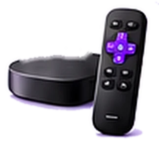
Lanzador 2.0.0 · se actualiza solo · .wgt, instalador .bat, proyecto .zip y guías PDF
Smart TV Samsung con Tizen (2016 en adelante). Se instala una sola vez en modo desarrollador; después se actualiza sola.
Sigue los pasos de acuerdo a tu equipo.
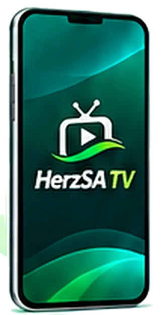
En TV Box o Android TV: instala la app Downloader desde Google Play, escribe assets/descargas/HerzSA-TV-1.5.2.apk, permite instalar apps desconocidas y selecciona Instalar.
Actualizaciones: cuando hay una versión nueva, la propia app te ofrece actualizar desde el pie de pantalla o desde Mi cuenta.
El aviso de Windows aparece porque el instalador aún no tiene firma digital. Dentro del video: F11 pantalla completa, ▲ ▼ cambian de canal y Esc regresa.
Actualizaciones automáticas: al abrir el programa, si hay una versión nueva se descarga sola y te ofrece reiniciar para instalarla.
Necesitas: el control del Roku, una laptop o PC en la misma red y los datos de tu servicio (usuario y contraseña). Si prefieres, un técnico de HerzSA.Net lo instala: solicítalo a soporte.
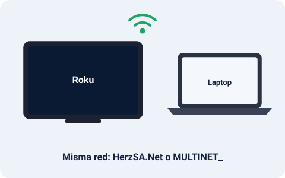
El Roku y la laptop (o PC) deben estar en la red de HerzSA.Net o en una red MULTINET_, por Wi-Fi o cable.
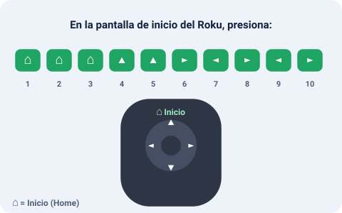
En la pantalla de inicio del Roku presiona con el control, sin pausas:
InicioInicioInicio ▲▲ ►◄►◄►
Si no aparece nada, espera 5 segundos y repítelo.
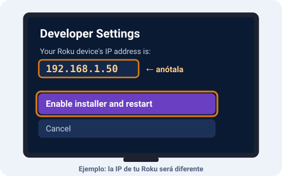
Aparece Developer Settings. Anota la dirección IP que muestra (por ejemplo 192.168.1.50) y elige Enable installer and restart.
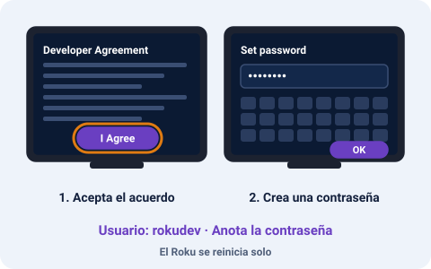
Elige I Agree y escribe una contraseña nueva. Anótala: la usarás en el paso 6 con el usuario rokudev. El Roku se reinicia solo.
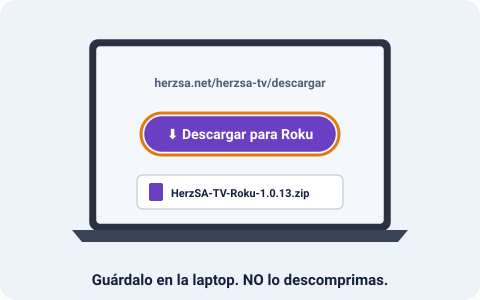
En la laptop, en esta página, pulsa Descargar para Roku. Se guarda HerzSA-TV-Roku-1.1.2.zip. No lo descomprimas.
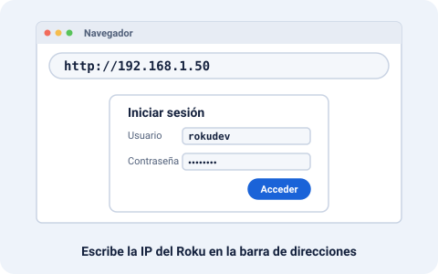
Abre el navegador (Chrome o Edge) y escribe en la barra de direcciones http:// + la IP del paso 3, por ejemplo http://192.168.1.50. Usuario rokudev y la contraseña del paso 4.
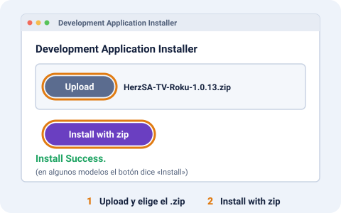
Pulsa Upload, elige el archivo .zip y después Install with zip (o Install). Debe decir Install Success.
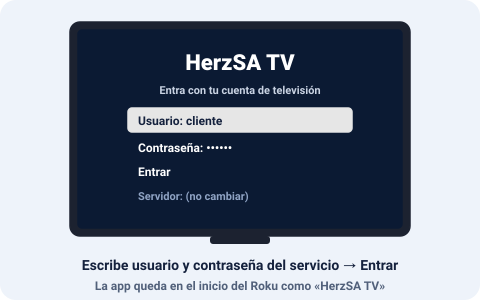
La app se abre sola en la tele. Elige Usuario y Contraseña, escribe los datos de tu servicio y elige Entrar. No cambies Servidor.
En cada Roku cabe una app instalada así y no se actualiza sola: para una versión nueva repite los pasos 5 a 7 (no se pierde la sesión). Si el Roku se restablece de fábrica, la app se borra y hay que repetir todo.
Cómo funciona: la app se instala una sola vez. Después, cada vez que la abres, busca la versión más nueva de HerzSA TV y se actualiza sola. No hace falta volver a conectar la computadora.
Necesitas: una PC con Windows conectada al mismo módem que el televisor, el programa gratuito Tizen Studio, una cuenta Samsung (gratuita) y el control del televisor. Samsung solo deja instalar apps firmadas con un certificado que incluye el número (DUID) de cada televisor; por eso se instala desde la PC. Si no quieres hacerlo tú, un técnico de HerzSA.Net lo instala.
Guías en PDF para imprimir: guía ilustrada paso a paso (configurar Tizen Studio, certificado e instalación, 24 páginas con dibujos de cada pantalla) y guía corta (4 páginas).
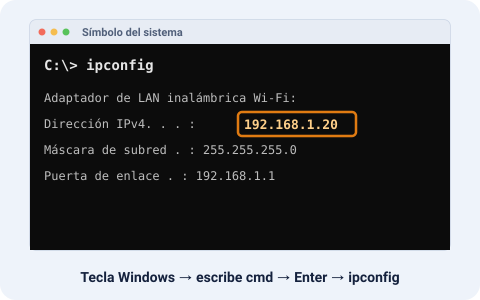
Usa una PC con Windows conectada al mismo módem que el televisor (por cable o Wi-Fi). Pulsa la tecla Windows, escribe cmd y pulsa Enter. En la ventana negra escribe ipconfig y pulsa Enter. Anota el número de Dirección IPv4 (por ejemplo 192.168.1.20).
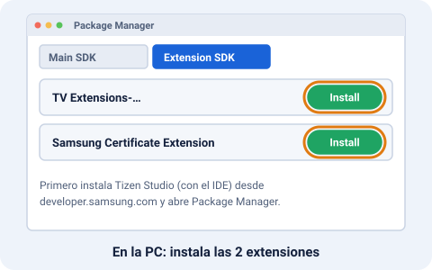
Descarga Tizen Studio (el instalador con IDE para Windows) e instálalo con las opciones que trae. Al terminar se abre el Package Manager (si no, búscalo en el menú Inicio). En la pestaña Extension SDK pulsa Install junto a TV Extensions y junto a Samsung Certificate Extension, y acepta la licencia. La descarga puede tardar. Esto se hace una sola vez por computadora.
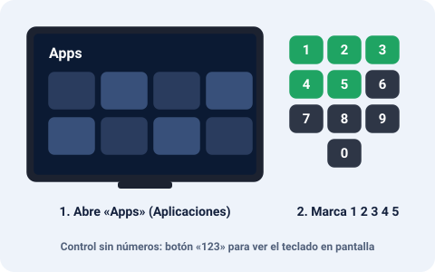
En el televisor abre Apps (Aplicaciones) y, con esa pantalla abierta, marca 12345 con el control. Si tu control no tiene números, usa el botón 123 para ver el teclado en pantalla.
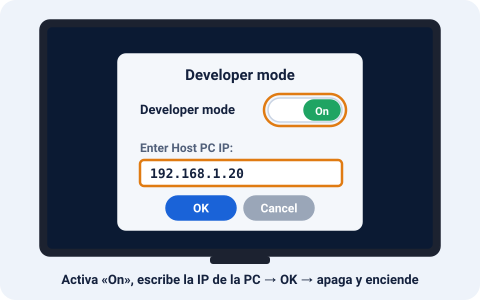
En la ventana Developer mode cambia a On, escribe la IP de la PC (paso 1) y elige OK. Apaga el televisor con el control y vuelve a encenderlo. Al abrir Apps verás arriba «Developer Mode».
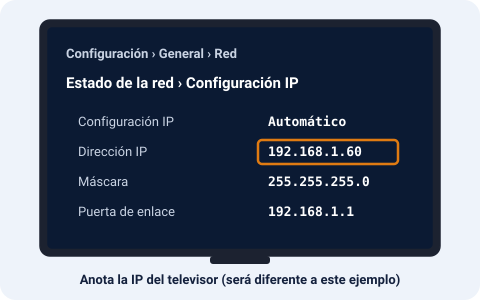
En el televisor: Configuración → General → Red → Estado de la red → Configuración IP. Anota la Dirección IP (por ejemplo 192.168.1.60).
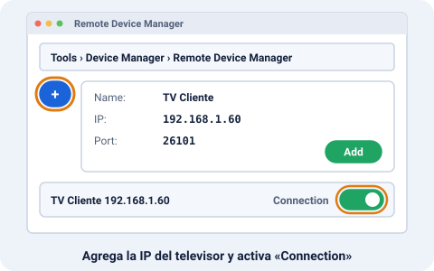
Abre Tizen Studio. Ve a Tools → Device Manager y pulsa el botón Remote Device Manager. Pulsa +, escribe un nombre (por ejemplo Sala), la IP del televisor (paso 5) y el puerto 26101. Pulsa Add y activa Connection. El televisor aparece en la lista del Device Manager.
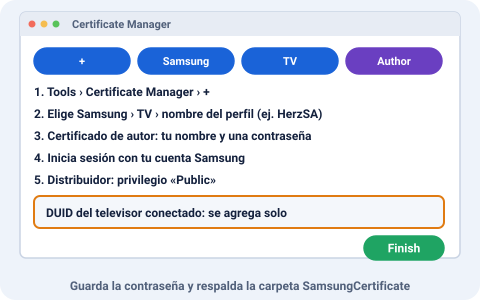
Con el televisor conectado: Tools → Certificate Manager → + → Samsung → TV. Escribe un nombre de perfil, por ejemplo HerzSA (anótalo: lo pide el paso 9). Crea el certificado de autor con un nombre y una contraseña, inicia sesión con tu cuenta Samsung y en el certificado de distribuidor elige privilegio Public. El número (DUID) del televisor se agrega solo. Pulsa Finish y guarda la contraseña.
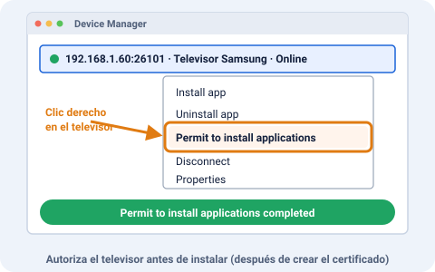
En Tizen Studio vuelve a Tools → Device Manager. Haz clic derecho en el televisor y elige Permit to install applications. Espera el mensaje «Permit to install applications completed».
Esto envía tu certificado al televisor. Sin este paso la instalación falla con un error de certificado. Hazlo con el perfil del paso 7 activo, y repítelo si creas un certificado nuevo o el televisor se restablece.
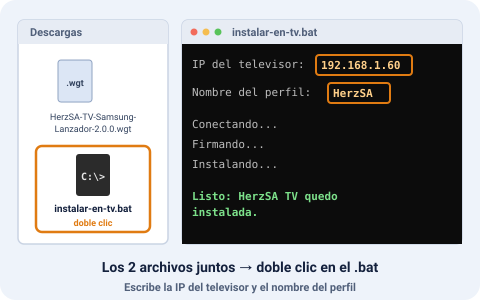
Descarga estos dos archivos y déjalos en la misma carpeta (por ejemplo Descargas): HerzSA-TV-Samsung-Lanzador-2.0.0.wgt y instalar-en-tv.bat.
Haz doble clic en instalar-en-tv.bat. Si Windows dice «Windows protegió su PC», elige Más información → Ejecutar de todas formas. En la ventana escribe la IP del televisor (paso 5) y pulsa Enter; luego el nombre del perfil (paso 7) y pulsa Enter. Espera el mensaje «Listo: HerzSA TV quedó instalada».
Si no funciona (o prefieres hacerlo en Tizen Studio): descarga el proyecto para Samsung (no lo descomprimas). En Tizen Studio: File → Import → Tizen → Tizen Project → Archive file, elige el archivo y Finish. Clic derecho en HerzSATV → Run As → Tizen Web Application. Si sale «Errors running builder Tizen Web Builder… NullPointerException»: clic derecho en HerzSATV → Properties → Tizen Studio → Platform, elige la versión de TV que tengas, luego Project → Clean y vuelve a ejecutar.
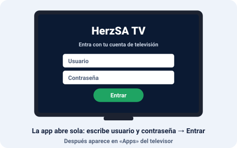
En el televisor abre Apps → HerzSA TV. Verás unos segundos «Cargando…». Escribe tu usuario y contraseña y elige Entrar.
¡Listo! No tienes que volver a hacer estos pasos: cada vez que abras HerzSA TV se actualiza sola. Si ves «Actualizando HerzSA TV…», espera unos segundos.
Para técnicos: si el televisor ya tenía HerzSA TV, esto se instala encima y conserva la sesión y los favoritos si se firma con el mismo perfil; si da error de firma, elimina la app anterior del televisor y vuelve al paso 9. Para otro televisor: conéctalo (paso 6), agrega su DUID al certificado de distribuidor en Certificate Manager, autorízalo (paso 8) y repite el paso 9 con el mismo perfil. Respalda la carpeta SamsungCertificate (en tu carpeta de usuario de Windows) y la contraseña.
Con los datos de tu servicio.
¿Aún no tienes usuario? El IPTV está incluido en los planes Lite y Plus, y en el Plan Básico cuesta $40 adicionales.
Ver planesHuella SHA-256 de cada archivo.
Si quieres comprobar que el archivo no fue alterado, compara su huella SHA-256 con la de esta tabla.
b065139c0042e61f23ecec6a06cee4bde3f6291522ac013c658ae484622d631c3825ca15c4cafa0cf756716afd03c4436137642093151b595974983c176d1473e479cd3039246ff0b8555f02bca7b9cd283491b973ecdd74e3fe06ef73444abca321cb218568f977c975f2c625fe81de5069a1aed0c7b58edc17b3db8ffc48ab0d6796cd68b67b038c5abe34f31d67b4bf79f92a569d622564bc0c2e32c36776689df3794cc5617e802dfa3cf05176dbf373c32275c179d1f555e4f4a7484780En Windows: certutil -hashfile archivo SHA256
Sobre la instalación.
HerzSA TV es un servicio para los clientes de HerzSA.Net y solo funciona dentro de nuestra red y de las redes aliadas MultiNet. Conéctate al Wi-Fi de tu servicio o a un punto MULTINET_.
Los avisos de Android y Windows aparecen con cualquier app que no venga de su tienda oficial. Estos archivos son los originales de HerzSA.Net, sin publicidad ni programas adicionales. Descárgalos solo desde esta página y, si quieres, verifica su huella SHA-256.
La versión para Roku está en proceso de publicación en la tienda de canales. Anunciaremos aquí cuando cada versión esté disponible en su tienda.
Verifica que estés conectado a nuestra red o a una red MULTINET_ y que el usuario y la contraseña estén escritos exactamente como te los entregamos. Si continúa, consulta el soporte de HerzSA TV.
Revisa la guía de diagnóstico. Si el problema continúa, escríbenos con tu nombre, el equipo que usas (Android, Windows, Roku o Samsung) y una descripción del problema. Nunca incluyas tu contraseña.
Soporte de HerzSA TV